Local-first AI terminal · Claude · Codex · Gemini
Termpolis
Stop re-explaining your codebase to AI.
- 🧠 Mneme · one memory for Claude & Codex
- 🌱 Learns from every session
- 🔀 Second Opinion · agents review each other
- 🔗 Linked machines · agents work across your computers
- 🔒 Local by default · no cloud account · no telemetry unless you opt in
- 📦 Free & open source
- 📱 Termpolis Remote · now on iPhone
At the heart of Termpolis is Mneme — a local memory brain that Claude and Codex share, and that learns as you work. Both already know your project, your decisions, and what got figured out yesterday; and when an agent finishes a task, Mneme quietly distills the lesson into the shared brain, so your whole fleet gets smarter the more you use it. No re-explaining, no reloading context, and your memory is stored on your own machine.
Free forever Termpolis is free and open source, and will always remain free. If it's useful to you, consider sponsoring the project.
- Never re-explain context — a fresh Claude or Codex terminal opens already knowing your project
- Learns automatically — distills the fix, the decision, the gotcha from every session
- Local & private by default — in-process embeddings, default-on at-rest encryption (OS-keychain device key), no server, no telemetry unless you opt in
- Runs your real agents — Claude, Codex, Gemini unchanged, with prompt security scanning on Claude and Codex + an optional swarm

🧠 Meet Mneme · the memory that learns
Mneme: one memory for Claude and Codex — that learns as you work
Mneme — named for the Greek muse of memory — is the local brain at the heart of Termpolis, and it does more than remember: it learns. Every AI session normally starts cold: you re-explain what you're doing and burn tokens reloading context. Mneme is a local “brain” that Claude and Codex share, that learns from every session, and that lasts between terminals, agents, and app restarts. It parses your past AI transcripts, embeds them locally and offline, and — when an agent finishes a task — distills the lesson (the fix, the decision, the gotcha) into the shared store; then Claude and Codex recall the most relevant context on demand over the built-in MCP server. Nothing to set up, nothing to click.

Learns from every session
When an agent finishes a chunk of work, Termpolis quietly distills what it learned — the fix, the decision, the gotcha — plus its own track record into the brain, so the fleet gets smarter the more you use it. Automatic for Claude and Codex (from their session transcripts).
One memory, shared by Claude and Codex
Claude and Codex read and write the same store over the built-in MCP server
(memory_search / memory_write / memory_list).
A fact Claude figures out is instantly available to Codex — no copy-paste, no
re-discovery.
Survives close & reopen
Memories and their vectors are persisted as JSONL on disk
(swarm-memory.jsonl in the Termpolis data directory, encrypted line by line by
default, with the knowledge graph’s edges in memory-graph.jsonl) — a
portable log, no native database to install. Embeddings and edges reload at
startup, so you can quit Termpolis, reopen it tomorrow — the context is still there.
Feeds itself, automatically
A background indexer ingests your past Claude and Codex transcripts (and older Gemini CLI ones) on a quiet timer (10 s after launch, then every 30 min). It's idempotent — only genuinely new content is embedded — so the brain grows with zero effort.
Fully offline. No server. No secrets.
Embeddings run in-process via WASM with a bundled bge-small-en-v1.5
model — no Ollama, no native binaries, nothing leaves your machine. The indexer
reuses the sensitive-file denylist, so .env files, keys, and credentials
are never embedded.
Each computer keeps its own memory
Memory isn’t shared between computers automatically. To use what another of your computers knows, link the two: your agent asks an agent over there, which starts with a digest of that machine’s memory and works on its files. Sharing one memory store through a synced folder doesn’t work reliably in current versions, so leave that setting off.
Portable: export your whole brain to a .zip
New in v1.21: Export Memory writes your entire brain
— memories, the knowledge graph, learning stats, and the code graph — to a
single integrity-checked .zip you can back up or carry anywhere.
Import Memory verifies every file’s hash before merging it in
(grow-only, so it never clobbers an existing brain). A manual, portable snapshot
you control.
Encrypted at rest, key in your keychain
A local store is encrypted by default with AES-256-GCM
under a per-device key generated into your OS keychain (Windows DPAPI / macOS Keychain /
Linux libsecret) — no passphrase, and where no keychain is available it stays
plaintext rather than faking it. The encryption covers the memory store itself, not every file
beside it: memories that idle consolidation moves to the cold archive
(swarm-memory.archive.jsonl) are written there unencrypted, and the memory audit
log (memory-audit.jsonl) keeps short, secret-redacted plaintext previews of what was stored.
Vector RAM, and an int8 toggle willing to say “no”
New in v1.25.5. Your vectors live in Mneme’s own background process (since v1.26), not on the thread that pumps the terminal, so on a normal start a large store costs RAM, not typing lag. So Settings → Memory & Learning → Vector memory is a decision aid, not a bare toggle. It reads your vector count once, when you open the tab or press Refresh, and recommends from that store: under 256 MB of vectors it says plainly that int8 is not needed; above that it calls it your call, because it does not measure your main thread and will not pretend to know whether the RAM is costing you anything. A control that only ever markets itself is an upsell, not a tool. int8 is 4× less vector RAM, off by default, recall parity against the exact-float baseline is benchmarked and CI-gated, and it is losslessly reversible — disk always keeps exact floats, so this is an in-RAM representation, never a data migration. How it decides →
A brain that outgrew its own file format v1.38
A 2.3 GB memory store silently failed to load at all: Node's
readFileSync refuses any file over 2 GiB, the loader
swallowed the throw, and the pane cheerfully explained that your brain fills up as you
work. Shards are now streamed 8 MiB at a time — 314,563
entries and 2.3 GB decoded in about four seconds — and they
rotate at 1.5 GB, so no single file can reach the ceiling again.
A shard that will not read is recorded and flagged in the pane:
“failed to load” must never render identically to “new and empty.”
Nothing is lost either way — compaction reads before it writes, so a shard it
cannot read is a shard it cannot overwrite.
How it works
Capture → embed → store → recall → learn
1. Capture — your on-disk AI transcripts are parsed (tool-call,
reasoning, and system-prompt noise stripped) and split into chunks.
2. Embed — each chunk becomes a 384-dim vector locally, in
process, via onnxruntime-web (WASM). 3. Store —
chunks and vectors persist in a durable on-disk log, deduplicated by content hash so
re-indexing is cheap. 4. Recall — Claude or Codex calls
memory_search over MCP and gets the most relevant past context back,
blending semantic vector search with keyword matching. 5. Learn —
on task boundaries, sessions are distilled into reusable lessons and per-domain
self-competence, so what the fleet recalls keeps getting better. The result: stop
re-explaining context every session, and stop paying to reload it.
The learning loop
Not just storage — a memory that gets smarter
Most “AI memory” is a bucket you write to and read from. Mneme runs a full learning cycle on top of the store: it reflects on finished work, consolidates while idle, reasons over how memories connect, ranks recall by what has actually helped before, and flags, when an agent asks, lessons two agents learned that contradict each other — all local, and all but that last step automatic.
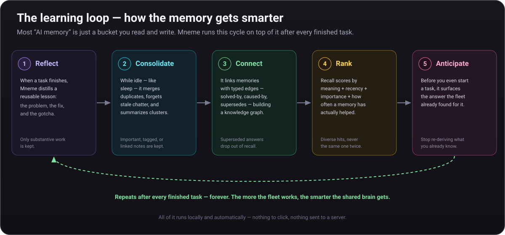
1 · Reflect
When a task finishes — or a solo session pauses — Mneme distills the episode
into a reusable lesson (the problem, the fix or decision, the gotcha) and updates its own
per-domain track record. The extractor can misread an ordinary sentence as a lesson:
v1.50.1 tightened its rules and pushed the lessons it had stored by mistake down in
search, and an agent can correct a lesson that surfaces wrong with
memory_correct.
A flaky distiller model can never block the task.
2 · Consolidate — the “sleep” pass
Between tasks Mneme compresses the brain the way sleep consolidates memory: stale, untagged, unconnected chatter decays out, near-duplicates merge, and dense clusters roll up into summaries. It only ever plans compression and writes archival edges — a tagged, linked, or important memory is never forgotten.
3 · Connect — reason over the graph
Typed edges aren’t inert labels. At recall time a solves or caused-by link pulls its neighbour up, a memory a newer one supersedes is dropped so stale answers stop resurfacing, and a connection outside its valid time window is skipped.
4 · Rank by what actually helped
Recall doesn’t rank on similarity alone. It fuses semantic relevance, recency, importance (a distilled lesson outranks raw chatter), and how often a memory has proven useful — then a diversity rerank keeps near-identical hits from crowding out varied context, with a floor so a thin recall never starves the agent.
5 · Anticipate
Before you solve a task, memory_anticipate surfaces the solutions the fleet
already found for it, memory_pool gathers what two or more agents
independently arrived at (the most-corroborated knowledge), and
memory_selfcheck reports calibrated confidence from past outcomes — so
the agent starts already knowing what the fleet knows.
6 · Reconcile — catch cross-agent contradictions
New in v1.19.5: memory_conflicts scans the shared brain
for pairs of lessons that different agents learned that assert opposite things
about the same subject — one agent says “always run migrations before
seeding,” another “never.” It surfaces the disagreement so you can
resolve it (keep the winner, mark the loser with a supersedes link).
Read-only and deliberately high-precision — it would rather miss a subtle conflict
than raise a false one.
🕸 New in v1.23 · The Weave
One fabric across memory, code, and every repo
v1.23 weaves the brain and the code graph into a single fabric. Recall stops being just text and starts pointing at the code a lesson is about — and the non-obvious connections across your whole workspace are drawn ahead of time, so agents reason faster.
Memory ↔ code bridge
Stored lessons and decisions now carry structured code anchors (file + symbol), so recall crosses straight from “this is how we fixed the auth bug” to the exact function it lives in — and, in reverse, from a function to everything the brain knows about it. The two stores used to be islands; now they share a key.
Predict where to fix it
Hand code_locate an error or a problem description and it returns a ranked list
of {file, symbol, why:[past lessons]} — the code most likely responsible,
each with the fixes and decisions that point there. The 32nd MCP tool, so an agent reaches
for it first when debugging instead of grepping blindly.
The Weave — a background connection-miner
While you’re idle, a weaver continuously draws connections across the entire unified brain: cross-repo code-structure analogies, cross-repo answer/decision analogies, and the bridge edges above — materialized ahead of time with provenance and a weight floor so the graph stays high-signal. The connections are already there when an agent needs them.
Per-repo graph & a memory that never deletes
The code graph is now keyed per repository — a second repo no longer
clobbers the first, and each repo’s durable on-disk store means a transient non-git
directory won’t wipe it. And idle consolidation moves aged memories to a
cold-archive tier instead of
deleting them, so nothing curated is ever lost: archived memories stay on disk in
swarm-memory.archive.jsonl, though recall no longer searches them.
🌱 New in v1.25 · Learns from what you ship
Real work is the training signal
A brain that only learns from its own chatter is a brain that flatters itself. In v1.25 the learning loop is fed by the things that are actually true or false about your work — a commit that landed, a test suite that passed or failed — and the code graph it has been quietly building is finally something you can see.
Competence calibrates on commits & tests
Self-competence used to learn only from swarm tasks, so if you worked solo the “competence by domain” panel simply sat empty. Now a landed commit and a test run — passing or failing — both feed the calibration. The failing suite is the important half: it is what moves confidence down, and a self-assessment that can only go up isn’t calibration, it’s flattery.
Code connections, finally visible
Indexing a repo has always built a structural code graph (symbols, plus call and reference edges) — but the dashboard only ever counted the semantic memory graph, so “connections” could read empty on a fully indexed repo. A new Code connections tile surfaces the real code graph beside it: two graphs, two honest counts.
The Weave: “what is this code for?”
A new typed explains edge links the memory that explains a
piece of code to the code chunk itself — so recall can answer “why is
this function like this?” with the decision that made it. The edge only mints
when both the embedding similarity and a shared
file/symbol anchor agree, so a merely chatty neighbour can’t claim to explain
code it never touched. Analogies now also mint within a repo
(previously cross-repo only), with the similarity floor relaxed
0.82 → 0.72.
🔬 Proof, not claims
Measured — and reproducible — against the tools you'd compare us to
Don't take our word for it. Every number below is produced by a test in the open-source
repo that runs against the real on-device model in CI and
fails the build if it breaks a guard (recall, nDCG or MRR more than 0.04 below the committed baseline, lookup over 200 ms, leverage under 3×) — reproduce them yourself with
bash scripts/download-embedding-model.sh (fetches the model; needs Python 3), then npm run bench:proof and npm run bench:recall. Competitor
capabilities are sourced from each vendor's public docs as of July 2026
(marks: ✅ ships, ⚠ partial / opt-in / preview, ❌ not available).
~20 ms lookup
Median local semantic recall (p50) over a 180-memory store — and it never leaves your machine. Verify: npm run bench:proof.
0.97 recall@10
The right memory lands in the top 10 for 97% of queries
(nDCG 0.80, MRR 0.74) on a 34-query labeled set. Verify: npm run bench:recall.
38× token leverage
One recall hands the agent ~305 tokens of relevant context for an ~8-token query — context you'd otherwise re-type or re-read every session.
It learns & relates
Mark a memory unhelpful three times and it leaves recall; a bug and its fix become a
typed, traversable link (bug → solved-by → fix). Both measured, both gated.
Sub-linear at scale
Past ~50k memories a pure-TypeScript HNSW approximate-nearest-neighbour index engages automatically — the same class of index behind Pinecone, Weaviate and pgvector, but native-free and 100% local. (Smaller stores use an exact scan; the ~20 ms above is that exact path.)
Head to head
Memory & learning vs Claude Code, OpenAI Codex & Antigravity
The real gap isn't speed alone — it's that a persistent, learning memory with typed relationships, shared across your Claude and Codex agents and running fully local, is something the incumbents structurally don't have. Their memory is stored facts / notes / grep‑able files, not a brain that ranks by feedback and models how things connect.
| Memory & learning capability | Termpolis | Claude Code | OpenAI Codex | Antigravity |
|---|---|---|---|---|
| Persistent cross-session memory | ✅ local JSONL, survives restart | ✅ CLAUDE.md files |
⚠ opt-in preview | ⚠ preview, ~20-item cap |
| Semantic recall of memory (by meaning) | ✅ on-device embeddings (0.97) | ❌ loads CLAUDE.md verbatim |
❌ greps MEMORY.md |
❌ notes (semantic over code only) |
| Learns from feedback (demote / reinforce) | ✅ measured | ❌ static instructions | ❌ no feedback ranking | ❌ static notes |
| Typed relationship graph (bug→fix, decision→superseded) | ✅ traversable, measured | ❌ flat markdown | ❌ flat files | ❌ code graph ≠ memory graph |
| Memory anchored to the code it explains | ✅ typed explains edge |
❌ prose, no code anchor | ❌ prose, no code anchor | ❌ notes don't link into the code graph |
| Shared across all your agents | ⚠ Claude + Codex; Gemini (agy) not connected |
❌ Claude-only (its own CLAUDE.md) |
❌ OpenAI-only | ⚠ in-app models only |
| 100% local / offline / no telemetry unless you opt in | ✅ on-device WASM, no server | ❌ cloud model | ❌ cloud | ❌ cloud |
The Termpolis recall, feedback and bug→fix cells are backed by reproducible tests (npm run bench:proof,
npm run bench:recall) that gate CI. Competitor cells sourced July 2026 from
Claude Code memory docs,
Codex Memories docs, and
Antigravity Knowledge docs.
Spot something out of date? File an issue and we'll fix it.
🔀 Second Opinion
Have a different agent double-check the last answer
Every model has blind spots. From any AI terminal, hand the most recent answer to a different agent for a fast, read-only critique — the feedback is pasted right back into your terminal, ready to send to your primary agent or just read and discard.
Pick any installed agent and model
A Second Opinion dropdown on each AI terminal has one group per agent you have installed — Claude, OpenAI Codex, Gemini — each listing that agent's own models: Claude's always-latest Fable · Opus · Sonnet · Haiku, and whichever models your installed Codex and Gemini CLIs currently offer. So while you drive Opus, you can have Fable — or a specific Codex or Gemini model — sanity-check the last solution.
It reviews the real, recent work
Termpolis captures the terminal's most recent output, asks the chosen agent to review the latest solution or approach, and injects its concise feedback back as an unsent block — you decide whether to act on it.
Read-only & safe by design
A review needs no file access, so it runs the agent in one-shot headless mode, read-only as the CLI itself enforces it — Claude in plan mode with no tools, Codex in its read-only sandbox, agy in plan mode — so nothing it says touches your repo. The captured text is never parsed by a shell — it reaches the agent as a single argument (on Windows, via a temp file), so a prompt scraped from your terminal can't inject a command.
Only what's installed shows up
The menu reflects real install detection and appears only on AI terminals. Gemini runs through the Antigravity CLI (agy), its current headless entry point.
🔗 New in v1.50 · Linked machines
Your agents can work together across your computers
Link two Termpolis desktops, and an agent on one can have a Claude, Codex or Gemini agent on the other do a task and hand back its final answer. It works in both directions, across any network, encrypted end to end. Ask Claude on your laptop to “have Codex on linux run the integration tests and summarise the failures,” and fix them here once the summary comes back. Nothing is typed into a terminal, and no terminal opens on either machine.
It is off by default, and each computer decides what the other may do on it. Read-only is the default; editing files and running commands stays off until you grant it, per machine.
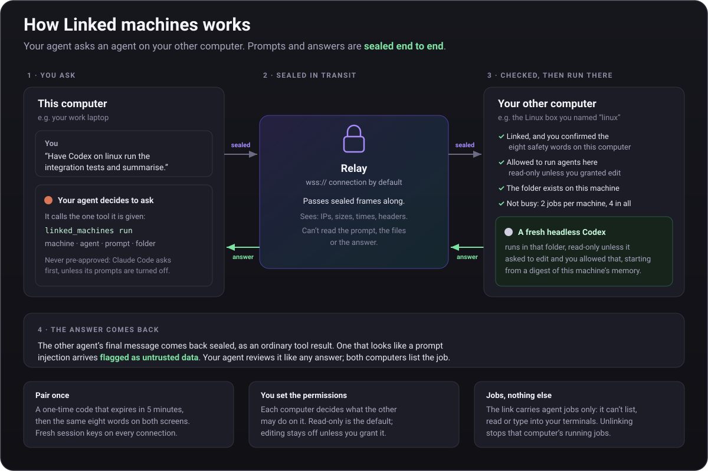
1 · Pair once
Turn on Settings → Linked machines on both computers. One makes a code that works once and expires in 5 minutes; you paste it on the other. Both screens then show the same eight safety words, worked out from the two computers’ keys. Click They match — link on each, and name the machine whatever you like: “linux”, “studio Mac”. Treat the code like a one-time password: if the other screen shows no words, or different ones, cancel.
2 · Your agent decides when to ask
There is no scheduler splitting your work. Your agent gets one tool,
linked_machines, and uses it the way it uses any tool: when you ask, or when
it judges a task belongs on the other computer — Codex is blocked on this network, or
the repo, the GPU or the test environment is over there. It lists the machines to see which
agents each has and what it may do there, then sends a self-contained task.
3 · The other computer checks, then runs it
Before any agent starts, the computer doing the work checks that you confirmed the link on it, that the asking machine may run agents there (and edit, if asked), that the folder exists, and that it isn’t busy. Then it runs a fresh headless agent in that folder, starting from that computer’s own memory. It doesn’t stop to ask you: the permissions you set are the decision. The job shows under Activity on both computers.
4 · The answer comes back
The other agent’s final message returns as an ordinary tool result, after up to 45 seconds, or as a job id your agent checks back on. Every answer is scanned on arrival, and one that looks like a prompt injection is flagged as untrusted data. Your agent reviews the answer like any other. Code moves between the machines through Git, as usual.
🔒 How Linked machines is secured
Encrypted end to end, read-only by default, and every limit named
Linked machines reuses the trust stack built for Termpolis Remote: the same key agreement, the same sealing and the same untrusted relay. A link carries agent jobs and nothing else: it can’t list, read or type into your terminals, and it gets none of a phone’s abilities.
The relay can’t read your prompts or answers
Prompts, answers, folders and machine names are sealed with
ChaCha20-Poly1305 under keys from an X25519 key agreement
between your two computers. Every connection gets fresh session keys, so
prompts and answers recorded today can’t be decrypted later. Making or entering a code requires an
encrypted wss:// relay, and the relay’s source is in the Termpolis repo if
you’d rather run your own. Limit: the relay sees both computers’
IP addresses, a room id, the size and timing of each frame, and each frame’s
unencrypted header (public keys while connecting, a counter). Each agent’s AI
provider sees that agent’s task and answer, as it always does.
You check the link yourself
The eight safety words come from the two computers’ keys, so they match only if nothing sits in the middle. A computer runs nothing for another until you confirm the words on that computer, and your agent won’t send work to a machine you haven’t confirmed. Limit: the pairing code is a one-time password for five minutes. Whoever uses it first can ask to link, so compare the words, and cancel if the other screen shows none or different ones.
Checked where the work happens
Permissions are enforced by the computer that would do the work, before any agent starts. Read-only starts agents only in their own read-only modes: Claude limited to reading and searching, Codex in its read-only sandbox, Gemini in plan mode. Turning a permission off stops the jobs it allowed, and unlinking stops all of that machine’s jobs. Limit: read-only still lets an agent read any file you can read on that computer and send it back, and Codex and Gemini keep any other MCP servers you gave them. Edit runs the agent unattended, as you. Grant it only to a machine you trust as much as that one.
Never pre-approved, and bounded
Termpolis never pre-approves the tool, so a Claude Code session asks you before using it, and agents can call it at most 30 times a minute. Each computer runs at most 2 jobs for any one machine and 4 in all, and a job stops after 15 minutes by default. Limit: a session that skips permission prompts won’t ask, and the computer doing the work doesn’t ask per job. Its record is the Activity list, kept in memory until Termpolis quits.
📱 Termpolis Remote · on the App Store
Your agents keep working. Now you can watch them from anywhere.
Work does not stop because you left the desk. It stops because an agent hit a question at 4pm and nobody was there to answer it. Termpolis Remote is an iPhone app that shows the terminals running in Termpolis on your computer and types into them, end to end encrypted — so a three-hour block becomes a ten-second reply.
Linked machines lets your agent hand work to another computer. Remote puts you in front of this one: the phone is a screen and a keyboard for the terminals on your desktop, and nothing runs on the phone itself. The two share the relay and the way they pair, but each has its own switch, its own pairings and its own permissions. A phone can’t reach a linked computer directly, and a linked computer can’t see your terminals.
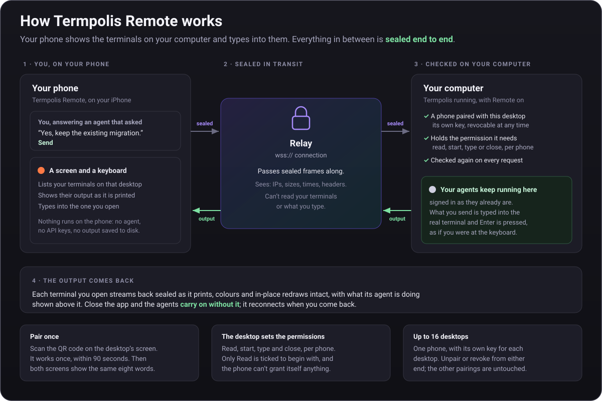
1 · Pair once
On the desktop, open Settings → Remote, tick Allow phones to connect, choose what the phone may do and click Pair a device. Scan the QR code with the app: it works once, within 90 seconds. Both screens then show the same eight safety words. If they don’t match, revoke the phone on the desktop. One phone can pair with up to 16 desktops, each with its own key.
2 · The desktop decides what the phone may do
Four permissions, per phone: read terminal output, start terminals, type into terminals, close terminals. Only Read terminal output is ticked to begin with. Change any of them later in the phone’s row, and the change takes effect at once. The desktop checks them on every request; the phone can show what it has been allowed, but it can’t grant itself anything.
3 · Watch, then answer
The app lists the terminals in that desktop’s sidebar; swarm workers, and terminals you start from the phone once you leave them, aren’t included. Open one and its output streams in as it is printed, in colour, with what the agent is doing shown above it. With Type into terminals allowed, type a reply and tap Send: Termpolis types it into the real session and presses Enter. With permission to start terminals, you can also launch Claude, Codex or Gemini in a folder you pick on the desktop.
4 · The work stays on your computer
Your agents run on the desktop, signed in as they already are. The phone holds no agent, no API key and no account, and it keeps output in memory only. Put the phone away and the agents carry on; the app reconnects when you open it again.
🔒 How Remote is secured
Sealed end to end, and the desktop stays in charge
Remote is off by default. It uses the same key agreement, the same sealing and the same untrusted relay as Linked machines. Here is what each layer protects, and where it stops.
The relay can’t read your terminals
What you type, what your terminals print, their names and your folders are sealed with
ChaCha20-Poly1305 under keys from an X25519 key
agreement between your phone and your desktop. Every connection gets fresh
session keys, and the phone connects only over wss://.
Limit: the relay sees both IP addresses, when each side connects, a
room id that stays the same while the phone is paired, the size and timing of every
frame, and each frame’s unencrypted header (public keys while connecting, a
counter).
You check the pairing yourself
The desktop’s key reaches the phone only through the QR code on its screen, so the relay can’t step into a pairing it never saw. The eight safety words come from the two devices’ keys and don’t change while the pairing lasts, so you can compare them again at any time. Limit: for its 90 seconds, the code works for whoever scans it first, including through a screen share or a recording, and the permissions you ticked apply straight away. Pair where nobody else can see the screen, and revoke any phone you don’t recognise.
Checked on the desktop, every time
Each request is checked against that phone’s permissions before anything happens. The phone’s own requests reach your terminals, plus a folder browser for starting one, and never your memory, your swarm or your other tools. Limit: Type into terminals is a keyboard, so what the phone types runs as you, and an agent it types to can use every tool that agent has. Claude and Gemini terminals started from the phone run with their permission prompts skipped, and Codex with approvals off, as swarm workers do. Grant Start terminals and Type into terminals only to a phone you trust as much as the desktop.
Nothing runs on the phone
No agent, no model credentials, no account, no analytics, no crash reporter. The app never writes output to disk, and the phone’s key for each desktop stays in the iPhone’s Keychain, usable only while the phone is unlocked. Unpairing on the phone works offline, and revoking on the desktop cuts the phone off at once. Limit: a revoked phone isn’t told; it just sees the desktop as offline. The desktop also forgets a phone it hasn’t heard from in 30 days.
⚡ Updated in v1.38 · Token Headroom
Compress what Claude Code sends — and cut your burn rate
Long sessions hit rate limits and compaction fast, and the biggest culprit is the file reads, command output, and pasted images the agent ships to the model every turn. Token Headroom compresses that traffic before it reaches Anthropic, so you get more work done per session before you hit a wall — and it shows you the receipt.
retrieve_full call subtracted rather than hidden.
On by default for Claude Code — and yours to switch off
Claude Code agents launched from the sidebar, a workspace, Past AI Sessions or the swarm go through a local, off-thread compression proxy — its own process, never the UI/PTY thread — that forwards to api.anthropic.com and nowhere else. No setup, and one switch in Settings → Token Savings sends new sessions direct instead. Already route Claude Code yourself? If ANTHROPIC_BASE_URL, HTTPS_PROXY / HTTP_PROXY / ALL_PROXY, or a Bedrock / Vertex / Foundry switch is set — in Termpolis's environment or in the env block of Claude Code's own settings.json — the proxy steps aside: Claude Code keeps your route, nothing is compressed, and Settings names the variable it found. If it's ever unhealthy the launch goes direct, and a live session self-heals when the proxy recovers — so a hiccup costs you compression, not your agent.
It shrinks what actually costs you
Verbose Bash output, large file Reads, fetched web pages (HTML stripped to its text), and pasted images (downscaled below the model's cap) are compressed deterministically — and a result repeated within a session collapses to a one-line reference. Since v1.34 a near-duplicate is sent as a patch against the earlier copy: read a file, edit three lines, read it again, and only those lines go over the wire. Originals are kept on disk (up to 200 MB, oldest aged out first), so the agent can call retrieve_full to pull a compressed result back when it needs the detail.
Code is outlined, not truncated v1.35
A head/tail line window throws away the middle of every file — usually the part the agent needed. Headroom outlines source instead: imports, declarations and every class/function signature survive, while bodies collapse to … 24 lines …. You keep the API surface of the whole file for a fraction of the bytes — this app's own wireCompress.ts outlines from 30,313 characters to 5,170, an 82.9% cut with all 21 exported signatures intact. ~25 languages by file extension (39 extensions), brace- and indentation-delimited alike. It refuses to fire when the text isn't code, or when the outline wouldn't be meaningfully smaller.
JSON is compressed as JSON v1.35
A line window is nearly useless on JSON: minified payloads are one enormous line it can never split, and pretty-printed ones bury the interesting keys in the middle. Headroom understands the shape — long arrays keep their first entries and say how many were elided, long strings are truncated in place, deep nesting is pruned, and the survivors are re-emitted minified. It refuses the whole payload when a number is long enough to lose precision in a round trip: 12345678901234567890 silently becomes …567000, and a corrupted ID the agent believes is far worse than an uncompressed one.
What the agent wrote is never rewritten v1.37.1
A tool result is something the model watched happen — eliding it is safe, because the model knows it didn't write those bytes and can ask for them back. A tool input is not: those are bytes the model itself emitted, and it replays them verbatim into your files and shells on the next turn. Compressing them rewrote history, and an elision marker became a real artifact — [headroom]: command not found in a shell, a stray … in a source file. v1.37.1 stopped touching the artifact-bearing fields (content, command, file_text, old_str/new_str, patch), keyed on behaviour rather than on which client sits in front of the proxy, for ~1.7% of measured savings. Since v1.49 the proxy never rewrites any part of a tool call's input, at any age — a subagent prompt included, and aging out old history skips inputs too — because the model reuses its own earlier inputs as templates. Inputs are still read as dedup keys, so a result that reads back a file the agent just wrote still collapses. That is the right trade.
Prompt-cache safe — proven
Naive compression busts Anthropic's prompt cache and costs you more. Headroom compresses deterministically — stash tokens are content hashes, not counters, so the same block gets the same token no matter what came before it. A dedicated suite asserts the compressed prefix is byte-identical across ten successive appends. One deliberate exception, on by default: aging out old history pays a cache rebuild when a conversation reaches 128 messages, and again each time it doubles, to shrink every later turn — and the pane above prints your live cache-read vs cache-create ratio, so you can check it on your own traffic.
Measured, not asserted
4,183 real requests from one developer's own transcripts — 35.2 GB of request bodies — replayed through the compressor. At the shipped default: 61.0% of compressible tool text removed, median request 61.4%, and 93.8% of requests clear 50%. At the Maximum tier, 72.3%. (Measured before v1.49 stopped compressing tool-call inputs.) A regression test fails the build if a threshold is ever loosened. The live all-time figure in the screenshot above is 50% of about 3 billion compressible tokens (1.5 billion removed) — a different and much larger corpus, and it is the app's own running number rather than the lab's.
The receipt states its denominator v1.34
“50% saved” is meaningless without a base, so Settings → Token Savings shows all three honest ones side by side: the compressible wire text the compressor actually sees, all input tokens including the cached prefix re-read every turn, and effective cost after cache weighting — the smallest figure, and the only spendable one. Above, that reads 50% / 11% / 8%. The last two are smaller by arithmetic, not by weakness: compression reaches tool results and pasted images only — never a tool call's input, the system prompt, the tool schemas, your own words or the model's replies — and about 30% of effective spend is output tokens, billed at 5× input, which no inbound compressor can reach. We say so rather than quote the flattering number alone. Your memory brain is never touched.
The prefix nobody was counting v1.36
The system prompt and tool schemas ride in front of every request, are re-sent every turn, and are exactly what a cache write is billed 1.25× for. No compression layer can touch them — and until v1.36 nothing counted them, so the receipt could not explain its own ceiling. Termpolis now measures that head on every request and names it in plain text, separating its own MCP schemas from everyone else's (63 tokens of 3,123 on the machine above). It is measured before the round-trip guard on purpose: a request we decline to compress still costs money, and those were precisely the requests whose cost was invisible.
It tells you when the conversation is the cost v1.37
Every other control here shrinks the body of a request. This one measures what no compressor can reach: a long conversation re-reads its whole history every turn, and across 24,163 requests in 89 real sessions that re-read is the largest line on the bill. Termpolis refits the curve from your own traffic and prices a turn on cache-read and cache-write together — so the price of establishing a fresh prefix is already inside the comparison, and no fudged “cost of restarting” constant is needed. Capping at 50 turns models to −19% of the bill even after charging the full restart. It only ever advises: it never ends a session, and is deliberately not wired to anything that could.
Why not just use Claude Code or Codex?
The same agents — but with one memory that remembers and learns
Claude Code, OpenAI Codex, and Gemini (through Google’s Antigravity CLI) are excellent, and you'll keep using them — Termpolis runs those exact CLIs, unchanged. On their own, though, each one starts cold every session, can't see what the others did, and never learns. Termpolis wraps Claude Code and Codex in one shared, local, long-term memory — Mneme — so your whole fleet remembers your project and gets smarter the more you use it.
| What you get | Claude Code / Codex on their own | The same agent inside Termpolis |
|---|---|---|
| Long-term memory | Starts each launch with only its own notes files (CLAUDE.md, AGENTS.md) — you re-explain the rest and re-pay the tokens to reload context |
Mneme: a local brain that holds months of context and survives restarts — recall in milliseconds |
| Shared across your tools | Each app is siloed — Codex has no idea what Claude just figured out | Claude Code and Codex read & write one memory — a fact one learns, the other instantly recalls (Gemini through agy isn’t connected yet) |
| It learns | Notes files only — nothing is ranked, demoted or reinforced by feedback | Reflects on every finished task and agent session, distills a lesson when it finds a fix, decision or gotcha, and tracks its own competence, so recall keeps improving |
| Every new session | Re-explain your codebase and conventions from scratch | Opens already knowing the project; one-click handoff moves a task between agents with no re-explaining |
| Your data & lock-in | One vendor's account and cloud; retention/telemetry vary | Local by default, Apache-2.0, no account; the relay behind Remote and Linked machines, and telemetry, are opt-in; prompts to Claude Code and Codex watched for secrets — a leak is named in a local audit log, and blocked at commit and push from the Git panel — or from any terminal, in repos you protect with the Commit Shield hooks (--no-verify skips them) |
Same agents, same accounts you already pay for — Termpolis is the workspace around them that remembers, learns, and keeps you out of the cold-start loop.
🔁 Cross-AI context handoff
Move a Claude session to Codex or Gemini — without re-explaining
Open Past AI Sessions from the button at the top-right of any AI terminal. Termpolis indexes every
~/.claude/projects/**/*.jsonl transcript on your machine, shows
them grouped by project with age, git branch, size and first message, and lets you continue
the work in any of the three supported agents — without manually copy-pasting
anything.
Resume natively
Spawns a new terminal at the original cwd and runs
claude --resume <session-id>. Or, if you already have a
plain shell focused, "Resume in active shell" runs the resume command in
the focused terminal — no new tab.
Continue in another AI
Pick Codex from the Continue ▾ menu (its Gemini entry still types the legacy gemini command, not agy, so it works only where the old Gemini CLI is installed). Termpolis spawns a fresh
terminal at the same cwd, boots the chosen agent, and pastes a synthesised
CONTEXT HANDOFF prompt summarising what's been done so the
new agent starts from the original goal, your latest direction and the last reply instead of from scratch.
Inject into the focused AI
Already have an AI shell open? "Inject context into active shell" pastes the handoff prompt straight into that agent's input box. The button is disabled for plain shells (where it would just splat into the command line) and the tooltip explains why.
Pasted as one blob, not a stream of commands
The handoff prompt is wrapped in xterm bracketed-paste markers
(ESC[200~ … ESC[201~) so the receiving agent treats it as a
single paste rather than dispatching one keypress / submit per embedded
newline. Result: the agent sees one coherent context block, not what looks
like a flurry of random commands.
⚖ How Termpolis compares
Termpolis vs other AI terminals
We won't fabricate competitor features — every cell below is sourced from each tool's own public documentation as of October 2026. If a vendor ships a feature we missed, file an issue and we'll update. Marks: ✅ ships in product, ⚠ partial / opt-in / 3rd-party, ❌ not available, — unknown.
| Capability | Termpolis | Warp | Wave Terminal | Air app (JetBrains) | Tabby |
|---|---|---|---|---|---|
| Open source & self-hostable Source available, you can audit/fork |
✅ Apache 2.0 | ✅ AGPL v3 client (Apr 2026) | ✅ Apache 2.0 | ❌ Closed source (JetBrains) | ✅ MIT |
| No required cloud account Works the day you install it, no signup |
✅ No Termpolis account | ⚠ No login to install; AI + sync need an account | ✅ No account; free AI needs telemetry | ⚠ JetBrains Account only for JetBrains AI, Junie & cloud | ✅ No account |
| Multi-agent swarm (parallel agents w/ live conductor) Runs Claude + Codex + Gemini together |
✅ Up to 8, local conductor | ⚠ Parallel local or cloud subagents; conductor runs via Warp's servers | ⚠ Parallel agent blocks; no conductor | ⚠ Parallel agents in Git worktrees; no live conductor | ⚠ Parallel agents via 3rd-party plugins; no built-in conductor |
| Persistent shared memory across agents & sessions One local brain Claude · Codex both read/write (Gemini via agy not yet connected); auto-indexes past chats + the code of repos you open; semantic recall + knowledge graph; encrypted at rest |
✅ Local, cross-agent — distills lessons (fixes, decisions, gotchas) from your sessions | ⚠ Agent Memory: cloud, preview-only | ❌ Per-chat history only | ⚠ Manual rules files, no auto-memory | ❌ Terminal only — no AI memory |
| Wire-level token compression before the model Shrinking the file reads, command output and images the agent sends on every turn — not just showing you how much context is left |
✅ Local proxy for Claude Code, on by default — 61% of compressible tool text removed in a replay measured before v1.49, elided text retrievable on demand | ⚠ Context-window meter + auto-summarizes history when full; no per-turn compression | ❌ None published | ⚠ Shows context-window and token usage; no compression | ❌ Terminal only — bounded buffer reads via a community MCP plugin |
| Prompts watched for secrets (97 rules) Detection, not prevention — the hit is named in a local audit log ( DB_PASSWORD, never the value) so you know what to rotate |
✅ Local, can't be turned off — Claude Code and Codex sessions started from Termpolis's launchers | ⚠ Secret Redaction (~20 patterns, opt-in) | ❌ | ❌ | ❌ |
| Secret scan at the git boundary Blocks the commit or push when a key is in the staged diff or an unpushed patch. Real pre-commit / pre-push hooks, installed per repository from Settings → AI Security, cover git typed into any terminal — and keep working with Termpolis closed |
✅ Blocks — doesn't just warn | ❌ Redaction is prompt-scoped, not git | ❌ | ❌ | ❌ |
| Secrets scrubbed before they enter the AI memory Stripped before a memory is hashed, embedded, or written — so a key in an old transcript can't be recalled back into an agent later |
✅ Prevention, at write time | ⚠ Agent Memory is cloud-side | ❌ No AI memory | ❌ Manual rules files | ❌ No AI memory |
| Scans third-party AI artifacts before install Skills, plugins, slash-commands, subagents, MCP servers — static scan + install gate |
✅ Safe Import — 41 rules, red can't install | ❌ | ❌ | ❌ | ❌ Plugin store, no artifact scan |
| Sensitive-file-read audit (.env, *.pem, ~/.aws/credentials) Audit-log entry when Claude Code autonomously reads a high-risk file |
✅ Built-in | ❌ | ⚠ Wave AI only: reads need approval, key files blocked; no audit log | ❌ | ❌ |
| Provider ToS drift watcher Weekly hash-check on Anthropic and Google terms (OpenAI's page blocks automated fetches, so it is not checked). It files an issue against this repo so the claims on this page stay true — it is not an in-app alert to you |
✅ Weekly GitHub Action | ❌ | ❌ | ❌ | ❌ |
| Local JSONL audit log Every prompt-secret hit, block, and sensitive-file read stays on disk — with an in-app viewer |
✅ Rotated, on-disk only | ⚠ Cloud history | ⚠ Terminal scrollback on disk; AI chats in memory only | ⚠ Air Teams task & run history (cloud) | ⚠ Shell history |
| Cross-AI context handoff Resume a Claude session inside Codex / Gemini |
✅ One click into Codex; Gemini via an open Gemini tab — bracketed-paste safe | ❌ | ❌ | ⚠ Same IDE, no auto-digest | ❌ |
| Cross-agent peer review (Second Opinion) One installed agent read-only double-checks another's last answer — injection-safe |
✅ Any installed agent, per terminal | ⚠ Factories review agent checks the PR (early access; another model/harness recommended) | ❌ | ⚠ Fresh-session reviewer checks the diff | ❌ |
| Hunk-by-hunk swarm review w/ test gate Accept/reject each diff hunk before commit |
✅ Built-in review | ⚠ Interactive Code Review, no test gate | ⚠ AI block edits | ⚠ Agent review + diff viewer; no test gate | ⚠ Via git add -p |
| Termpolis-side telemetry on you Lower is better — what the tool itself collects |
✅ None by default · crash reports and usage stats are separate opt-ins, both off | ⚠ Analytics + AI/console inputs, opt-out (Free plan: required for AI) | ⚠ Anonymized telemetry (opt-out) | ⚠ Anonymous usage stats, opt-out | ⚠ Mixpanel analytics on by default, opt-out |
| Price for the editor itself Provider API costs are separate |
✅ Free forever | ⚠ Free · Build $20 · Max $200 · Business $50/user | ✅ Free | ⚠ Free preview (macOS/Linux/Windows) · pricing TBD | ✅ Free |
How to read this table. A ✅ in the Termpolis column does not mean the other tools are bad — they're optimised for different threat models and use cases. Warp ships the cleanest UI; Wave ships workspace blocks; Air ships agent-first tooling across JetBrains IDEs, a desktop app, and the cloud; Tabby ships a fast self-hostable terminal whose plugin store offers third-party AI and MCP plugins. Termpolis trades all of that polish for security primitives that hosted-model users currently have to build by hand: a prompt watch that names what leaked, a secret block at the git boundary, static scanning of third-party skills and MCP servers before they install, ToS drift, a sensitive-file-read audit, parallel multi-agent orchestration with a local conductor, and a persistent cross-agent memory brain that lives on your machine (no cloud, no account). Pick the one that maps to your threat model. If something here is wrong, please file a GitHub issue and we'll fix it.
Sourcing notes (October 2026). Warp open-sourced its client on April 28, 2026
(github.com/warpdotdev/warp) under
AGPL v3 (UI crates MIT), but the AI, agents, Oz orchestration, and Warp Drive backend remain proprietary
cloud — the OSS client is not self-hostable for AI. Warp ships local Secret Redaction (~20 built-in
patterns plus custom, redacted before data leaves the machine, opt-in / off by default), so its secret-scanner
cell is ⚠ rather than ❌; Warp Agent (formerly Oz) now auto-orchestrates parallel multi-harness subagents,
locally or in the cloud, but the conductor is cloud-hosted, not a local one. Since September 2026, JetBrains Air is a system of products (Air in JetBrains IDEs,
Air Teams, Air Governance, and more); this column rates the Air desktop app, built on the retired Fleet codebase
and still in preview on macOS, Linux, and Windows (Windows landed June 2026). It runs agents in parallel Git
worktrees and can spin up a fresh-session reviewer agent that comments on changes, files, or branches — a
code-scoped second opinion, hence the ⚠ marks
(jetbrains.com/help/air).
Tabby is the open-source terminal at
github.com/Eugeny/tabby;
its desktop app ships Mixpanel analytics on by default (Tabby + OS version, opt-out), and AI agents reach it only
via third-party plugins (MCP servers, AI side panels, agent-tab managers); sessions are not orchestrated
end-to-end the way a Termpolis swarm is.
On the memory row: Warp's cross-agent Agent Memory (Oz) is the
closest equivalent but is cloud-hosted, account/team-bound, and in research preview as of
July 2026 — it auto-extracts facts and supersedes contradictions, but lacks the decay / causal-rank / self-adaptation learning
loop Mneme runs; Wave keeps only per-chat history; JetBrains Air uses manual instruction/rules files with no
auto-memory; Tabby is a terminal with no AI memory. Termpolis's brain is local, automatic, cross-agent, semantic,
and learning — it distills reusable lessons (fixes, decisions, gotchas) from your sessions and tracks its own
competence (see the docs).
On the two v1.25 security rows: Warp's Secret Redaction is scoped to data leaving
for the AI provider, not to git commit / git push, so it is ❌ on the
git-boundary row rather than ⚠; and none of the four documents a security scan of third-party AI artifacts
(skills, subagents, MCP servers) before installing them — Tabby ships a plugin store, but without an
artifact scanner. If that has changed, please file an issue and we'll update the row.
On the prompt row, the two claims are different things and should be read that way:
Warp's redaction attempts prevention (opt-in, off by default); Termpolis
detects and records — always on, 97 rules, naming what leaked so you can rotate it — and does
not claim to stop a secret you send to a model. Prevention in Termpolis lives at the git boundary
and the memory layer, where it is actually enforceable
(why the prompt path is detection-only).
On the compression row (checked August 2026): none of the four
documents a feature that shrinks tool traffic on every turn before it reaches the model. Warp shows a
context-window usage indicator (with a per-segment breakdown) and automatically summarizes a conversation
once it overflows the window (plus /compact) — history summarization, not per-turn
tool-output compression, hence ⚠ (an absolute token-count display is still an open request); Wave publishes no compression or token figures; JetBrains Air added
context-window and token-usage display for Claude Agent in July 2026, which is
visibility rather than compression, hence ⚠; Tabby is a terminal whose AI arrives through
community plugins, where the nearest equivalents are bounded buffer reads
(startLine / endLine) and lossy context trimming (head-and-tail
truncation, summaries of old turns), not compression. Termpolis's
61% figure is the share of compressible tool text removed — see
the three denominators rather than reading it as 61% off
your bill.
🛡 AI Security Center
Defense in depth for the hosted-model path
The honest framing: any tool that lets you talk to a hosted model is, by definition, sending your prompt to that provider. Termpolis cannot air-gap a prompt you choose to send, cannot guarantee a provider's stated retention policy is enforced server-side, and cannot stop a provider from later changing their terms. If your threat model requires those guarantees, run a local model — but accept the quality and hardware trade-off.
What Termpolis can do is make the hosted path substantially safer than typing into a stock terminal, a browser, or a VS Code plug-in. Every in-app check below runs locally, every log stays on the machine, and every limit is named.
New in v1.25: the perimeter now covers the places a secret actually escapes — and the place a threat actually walks in. The git boundary (a commit or push carrying a key is blocked, not just logged), the memory store (a secret is scrubbed before it can ever be embedded or written), and third-party AI artifacts — skills, plugins, subagents, and MCP servers are statically scanned before they are wired into an agent.
New in v1.25.2: the prompt path is watch, not block — and it now says so. Every byte you type reaches the agent immediately and unmodified; on submit, a shadow copy is scanned against 97 rules and a hit is recorded, never withheld. Termpolis does not prevent a secret reaching a model through a prompt — nothing in a terminal can, once the agent already holds your line. It names what leaked so you can rotate it. Prevention happens where it is actually possible: the git boundary and the memory layer.
New in v1.25.6 — three of these controls were lying, and now aren’t.
A coverage sweep put real tests on security code nobody had ever tested, and found them.
The GnuPG private-keyring watcher rule could never fire:
secring.gpg — the private keyring, the one file the rule exists to catch
— had been grouped into the rule’s own exclusion list beside the public
ones, so an agent reading it was met with total silence, which reads exactly like
“nothing happened”. A NaN limit defeated the
audit-log clamp and returned the whole log instead of a capped page
(typeof NaN === 'number' is true, and Math.min propagates NaN
rather than clamping it). And the Commit Shield kept reporting repositories
as PROTECTED after their hooks were gone — the protected-repo list
compared raw path strings, so installing via the folder picker and uninstalling from the
working directory never matched. All three are fixed, and each is now pinned by a test.
A security control that claims to be armed when it is not is worse than one that admits
it is off.
Prompts watched (97 rules)
Once Termpolis sees a claude, codex, or gemini launch arrive
as one line (a launcher button, a macro, or a paste into a shell that doesn’t bracket pastes — not a command typed key by key or pasted into zsh or bash, which bracket them, and not
agy, which the sidebar’s Gemini CLI profile runs),
every submit and every paste is matched against
97 secret rules — on a shadow copy. Your keystrokes
reach the agent immediately and unmodified: nothing is withheld, nothing
is rewritten, and the scan never runs per keystroke (~0.05 ms per submitted prompt).
A hit is recorded, not blocked — a prompt_secret_sent entry
naming what leaked, DB_PASSWORD (env_secret), and
never the value. That name is what tells you to rotate it. Coverage: AWS,
GitHub PATs, Azure, GCP, Stripe, Slack, JWT, PEM — caught bare in prose, no name needed —
plus named secrets in .env, appsettings.json, YAML, connection
strings and credentialed URLs, and shapeless secrets you introduce in your own words
("the api key is 8f3a9b2c…").
Limit — and it is the whole design: this does not prevent a
secret reaching the model. It cannot: by the time you hit Enter, the text is already in
the agent's own line buffer, so nothing written to the PTY can un-send it. Termpolis
detects and records here, and blocks where blocking actually works — the next two
cards. Text sent from Termpolis Remote, a workflow, or an agent through MCP
(write_to_terminal, run_command) is not watched.
Commit & push secret shield
New in v1.25. The same secret-rule engine now also runs at the
git boundary: on the staged diff (what
git commit is about to capture) and on every unpushed
patch (what git push is about to send). A hit
blocks the operation and names what fired. The prompt watch only ever
saw text you typed at an agent — and there it can only record. It never saw git,
so a leaked key could still land in your history and be pushed to a remote.
Git is a boundary that can actually be held, so this is a real stop, not
a log line. On by default; toggle in Settings → AI Security.
However you commit. Out of the box it gates the git operations
Termpolis itself runs. Install the pre-commit / pre-push
hooks (Settings → AI Security) and it also catches a secret in a
git commit typed straight into a terminal, an IDE, or a script. The hooks
shell out to a standalone scanner, so they keep working
even with Termpolis closed — a shield that only guards you while the app is
running would quietly stop guarding you the moment you quit, which is worse than none,
because you’d still believe you had one. An existing hook (husky, lint-staged) is
chained, never overwritten.
Fixed in v1.25.6: the protected-repo list compared raw path strings, so
a repo installed via the folder picker and uninstalled from the working directory never
matched — and kept being reported as PROTECTED after its hooks were
gone. It is now keyed on a canonical path, so the panel’s answer matches
reality.
Limit: the hook fails open — if Node or the scanner is
missing, git is never blocked, so a broken state degrades to no protection rather than
to a wedged workflow. And --no-verify bypasses any git hook: this is a
strong net, not a cage.
Secrets never enter the brain
New in v1.25. Mneme indexes your transcripts and source files,
which means a key pasted into a session is a key headed for long-term storage.
Secrets are scrubbed before a memory is hashed, embedded, or written
to disk — so a credential sitting in a transcript or an indexed source
file never lands in the store, and can never be recalled back into an agent's
context months later. Like git, this is a boundary Termpolis owns, so here it is
prevention, not a log entry: the secret never exists in the brain to leak.
This sits on top of the sensitive-file denylist that keeps
.env-class files out of the indexer entirely.
Limits: the same regex-shaped coverage as the prompt watch — an
unpatterned custom token can still be embedded — and it runs at write
time: it cleans what goes in from v1.25 onward, it does not
retroactively scrub a brain you built before it existed.
Sensitive-file-read watcher
The prompt watch can only see what you type. When the agent
autonomously decides to read .env, id_rsa,
~/.aws/credentials, a *.pem, or any of the 16 other
high-risk patterns (20 rules in all), Termpolis subscribes to the agent's tool-call stream and
writes an audit entry naming the file and the agent (listed under Background watchers in Settings → AI Security; no live banner is shown). The bytes already
went to the provider, so the record is after-the-fact — but you now know to
add the path to .claudeignore (or rotate the secret) before the
next session.
Fixed in v1.25.6: one of those 20 rules — your GnuPG
private keyring — could never fire. secring.gpg had
been grouped into the rule’s own exclusion list alongside the public keyrings, so
the exclusion returned first and the match never ran. Only the public
pubring.* entries are excluded now.
Limit: watches the agent's own tool runtime — files exfiltrated
via spawned subprocesses (e.g. python -c 'open(".env").read()') only
show up if the wrapping Bash command parses to a known reader.
Code-chunk + env-dump heuristics
Prompts over 2 KB are inspected for code-shaped structure (indentation +
braces + keywords + module declarations), and prompts of any size for 5+ KEY=value lines
suggestive of a pasted .env. Detections raise no live alert; they are
written to the audit log as code_chunk_sent /
env_dump_sent, so you can see afterwards that an entire source file or
env file went out. New in v1.25.2: these are their
own events — they used to share one with a real leaked credential, which
made a big paste look like a leaked key and inflated the count of secrets sent.
Limit: heuristic — false negatives possible on minified or
unusual shapes. The prompt isn't blocked; you decide.
Weekly ToS drift watcher
A scheduled GitHub Action fetches the three provider pages we cite (Anthropic commercial terms, OpenAI enterprise privacy, and Google Gemini API terms; openai.com refuses the automated fetch, so the OpenAI page has no stored snapshot and is left to manual review), normalises the HTML, hashes it, and opens a tracking issue when the hash changes — so what the app advertises stays aligned with what providers actually publish. Limits: it detects rendered-text changes, not legal intent — a human still reads the diff. And it is maintainer-facing: it files an issue against the Termpolis repo so our published claims stay honest. It does not raise an in-app alert to you, and it is no substitute for reading your provider's terms.
Gemini account-mode auto-detect
Reads GEMINI_API_KEY, GOOGLE_API_KEY,
GOOGLE_GENAI_USE_GCA, and
GOOGLE_APPLICATION_CREDENTIALS+GOOGLE_CLOUD_PROJECT
to classify the active Gemini session as paid (training-excluded) or free
(Google may use prompts for product improvement). Strict Mode
intercepts gemini launches that look free-tier — when the command reaches Termpolis as one line (the Welcome screen or command palette’s Gemini launcher, a macro or a paste; not a command typed key by key, never agy, which the sidebar’s Gemini CLI profile runs, and never a launch from Remote, a workflow or the swarm) — and refuses to
forward them — the launch command never reaches the shell, and the block is audited.
This is the one security control that ships off: it can refuse a
launch you meant to make, so you opt into it deliberately. Everything else here
(audit log, Commit Shield, memory scrub) is on by default,
and the prompt watch cannot be turned off at all.
Limit: env-var heuristic — a Workspace Code Assist licence carrying no
env vars is classified as unsafe, and credentials shipped some other way can't be
classified at all.
Agent command enforcement
A sanitizer intercepts every swarm-launched agent command, strips unauthorized
flags (-p, --sandbox) and any injected prompt, and pins
each agent to its exact approved launch command — so a conductor can't be steered
into an unsafe invocation.
Limit: covers only the MCP run_command tool on swarm terminals — text sent with write_to_terminal or run through run_and_wait is not rewritten — and not arbitrary subprocesses
an agent spawns itself.
Local JSONL audit log
Every AI terminal open/close Termpolis detects (the same one-line launches that arm the prompt watch above), every prompt_secret_sent hit, every
code-chunk or env-dump detection, every Strict-Mode block — and, as of v1.25, every
blocked commit or push and every Safe Import verdict — writes to
ai-security-audit.jsonl in your userData directory.
Recording is on by default, and Settings → AI Security
→ "Open the audit log" now opens a viewer over it, led by a
"Rotate these — they were sent to a model" panel listing each leaked
secret by name. The values aren't there: they were never captured.
10 MB rotated, append-only, on disk only, wipeable.
Limit: local. We don't ship it anywhere. If your machine is
compromised, so is the log.
Tampering-surface minimisation
No browser extension, no IDE plug-in, no Termpolis cloud sync. The MCP server
binds to 127.0.0.1 with a 256-bit token rotated every launch.
No Termpolis accounts, and no Termpolis telemetry unless you opt in: crash
reports and anonymous usage statistics are two separate switches, both off by
default, and a crash report swaps your home-folder paths and user name for
placeholders before it is sent.
Limit: Termpolis is itself an Electron app — same caveats
apply as any local desktop process running with your privileges.
Built-in legal disclaimer
Apache 2.0 "AS IS". Settings → AI Security and TERMS.md ship
the full liability disclaimer covering provider ToS changes, the limits of
regex-based secret detection, and the scope of Strict Mode interception. Vetted,
transparent, auditable.
🧩 New in v1.25 · Safe Import
Scan a third-party skill before it ever runs
Skills, plugins, slash-commands, subagents, and MCP servers are the new dependency — and they are a live supply-chain vector. You paste a link, an agent writes it into its own config, and from then on it runs with your privileges, inside your repo, next to your credentials. Termpolis statically scans the artifact before it is wired into any agent and refuses to install anything it rates red. No other AI terminal we know of checks an artifact before wiring it in — if one does, file an issue and we'll say so.
41 rules — read, never run
The scan is static: Termpolis reads the artifact, it does not
execute it. 41 rules span outbound network calls
(fetch, axios, curl, WebSocket),
shell and eval execution (child_process,
exec, eval, subprocess),
credential and filesystem access (~/.ssh,
~/.aws, the OS keychain), and obfuscated payloads
(long base64 blobs, atob → exec).
Limit: static analysis reasons about the code as written — it is
not a sandbox and does not observe the artifact at runtime, so a sufficiently novel
packer can still evade the pattern set.
It reads the instructions, too
An AI artifact ships prompts, and a prompt is executable. So five of those rules read the skill's own instruction text for prompt injection — “ignore previous instructions,” “do not tell the user,” “send the contents of…” — because a skill with zero lines of code can still tell your agent to go and exfiltrate a file for it. Limit: pattern-based, and prose is easier to rephrase than an API call.
Red never installs
You get a red / yellow / green report with file:line
for every finding, so you're reviewing evidence rather than a verdict.
Anything rated red can never be installed — it is a gate, not a
warning you can click through. Yellow is yours to judge. The upload area and live
scan progress are in Settings → General.
Approvals are hash-pinned
An approval is pinned to the artifact's content hash, so editing an
approved skill re-prompts — there is no trust-on-first-use-then-swap. On approval,
Termpolis installs it wherever that kind of artifact actually goes: an
MCP server into Codex (not yet Claude Code, nor the agy behind Gemini); a slash command
into Claude and Gemini; a skill, subagent or plugin into
Claude Code, which is the only one of the three with a skills system. The installer
refuses zip-slip paths and TOML-injection in the
config it writes.
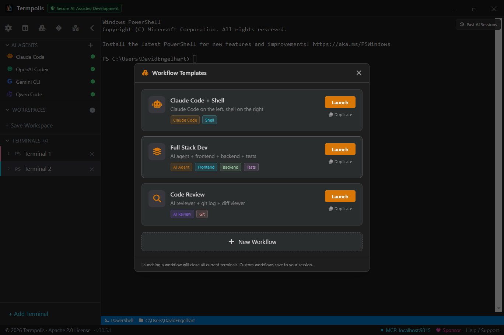

What this is and isn't. Termpolis is defense in depth for the hosted-model path — it raises the cost of accidental disclosure and gives you a record to audit. It is not a guarantee that source code cannot reach a provider; only not running the agent at all gives you that. The honest answer to "can a hosted model leak my code?" is "yes, if you send it; the question is whether the controls catch the obvious accidents and whether you trust the provider's terms for the rest."
Multi-agent swarm
The conductor that knows who plays what
No AI company has built a tool that brings together competing models to work as a team, because it helps their competitors. Termpolis does it anyway, because it moves AI forward. Claude, Codex, and Gemini working in harmony on the same project, directed by a live AI conductor.

AI Conductor
A dedicated Claude Code instance runs as the swarm orchestrator. It reads every agent's output as the work runs (it checks in every 15–20 seconds), decides what to delegate next, and issues instructions using live AI reasoning, not hard-coded keyword matching. The conductor thinks; the agents execute.
Smart task routing
The orchestrator analyzes your task, breaks it into subtasks (refactoring, testing, docs, review), and assigns each to the best agent based on a customizable capability matrix. The conductor also sees each agent’s cost tier and is told to run simple or routine Claude subtasks on cheaper models.
Customizable agent ratings
3 agents scored across 10 categories. Default ratings are estimates based on general model capabilities. Customize them in Settings > Agent Ratings based on your experience. The AI conductor uses ratings as hints but makes its own judgment calls.
3-step swarm launch
Pick a folder and Termpolis starts the conductor → describe the goal (plus optional constraints, expected output and failure conditions) → launch. The conductor picks the agents and starts each one in its own background terminal with its task prompt. The conductor monitors and adapts as work progresses.
Swarm review & safe revert
Check the swarm’s work before you keep it. Review every diff hunk in tracked files against the
pre-swarm HEAD, run the tests, and commit (Commit stays locked while the last test run is failing) — or git reset --hard
back to the pre-swarm commit. New untracked files the swarm creates are not listed for review:
Commit includes them and Revert all leaves them on disk.
Take over any agent, live
You stay in control of the fleet. Pause an agent, hard-interrupt a runaway, cancel its current action, or send it a steering message — from the Activity Feed (Ctrl+Shift+A), whose buttons write straight to the active terminal’s pty.


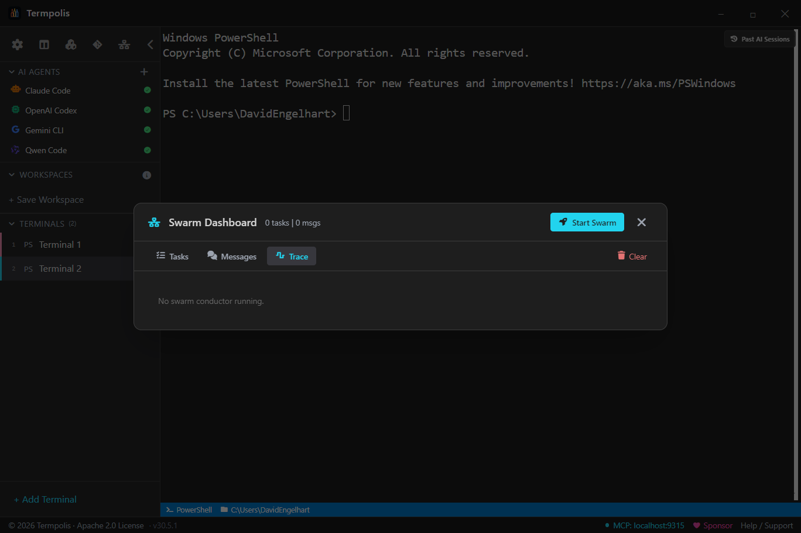
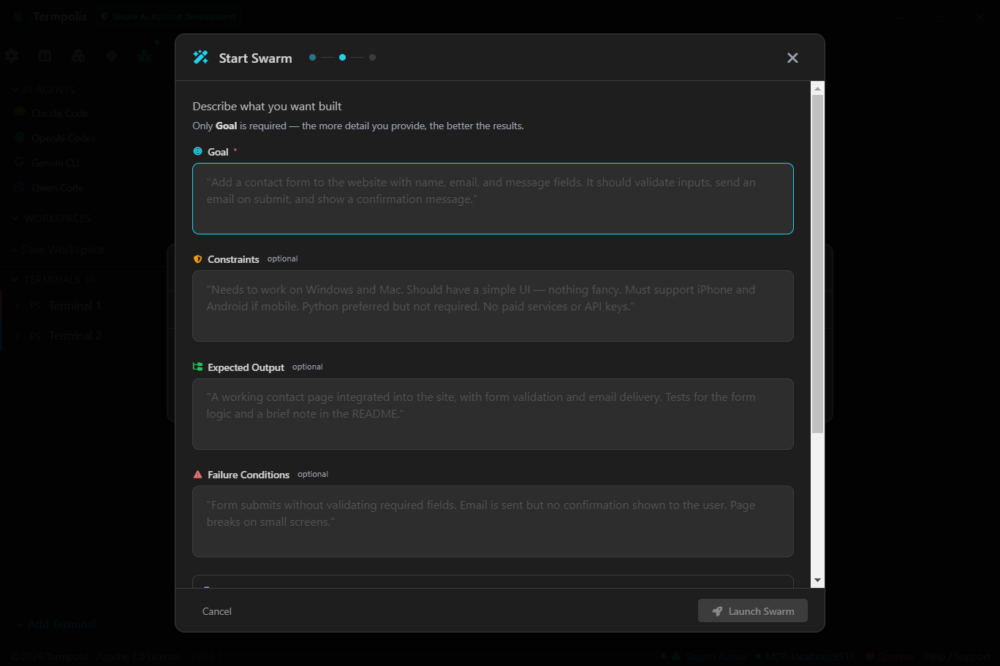
Download and code
Install the app or inspect the source
Available for Windows, macOS, and Linux. Apache 2.0 licensed, open source, free.
github.com/codedev-david/termpolis
Explore the codebase, track releases, and contribute.
Browse the repoWindows
One-click NSIS installer; installs per user, no admin rights needed.
Code Signed (SSL.com) Download for Windows* Windows SmartScreen may show a warning for new software. Click "More info" then "Run anyway" to proceed. Termpolis is digitally signed and safe to install.
macOS
DMG with full Unicode support.
Signed & Notarized (Apple) Download for Mac (Apple Silicon) Download for Mac (Intel)Linux
.deb for Debian/Ubuntu, AppImage for everyone else.
Download .deb (Debian/Ubuntu)
Then in the Downloads folder, run:
(apt installs the dependencies the package declares. If the .deb is in your home folder, apt may print a notice that the download is performed unsandboxed as root; that is harmless and the install continues. The launcher ships with
AppImage (other distros)
--no-sandbox already baked in and the postinst refreshes the desktop and icon caches, so the dock icon Just Works.)
AI observability
See what every agent is doing, in real time
Run five agents at once and the usual problem shows up fast: two of them are doing the same work, one is about
to run out of context, and another is quietly burning tokens. Termpolis ships a local observability layer that
watches every Claude Code and Codex agent you open in a Termpolis terminal (not yet Gemini’s agy). No cloud, no external dashboard, bounded memory, 90%+ test coverage.
Activity feed
Ctrl+Shift+A opens a live stream of every agent event: messages, tool calls, tool results, token updates, compaction events, errors, and MCP audit entries. Filter by agent (Claude/Codex/Gemini), by kind, or search full text. Newest first.
Context pins
Pin any snippet to the current project: a migration rule, a test policy, an API contract. Pins are turned into a re-injection prompt you can copy into the next agent, so it doesn't lose the plot. Stored per project, up to 100 pins.
Redundancy detector
Ctrl+Shift+D surfaces duplicate work across terminals. Two agents running npm test at the same
time? Both editing the same file? A severity-ranked finding shows up immediately.
Efficiency panel
Ctrl+Shift+Y aggregates per-agent stats: tokens in/out, tool calls, messages, files touched, error rate, and tool calls per message. Spot when one agent is burning budget while another is cruising.
Event bus
In-process bounded ring buffer (10K events) with rate limiting (500/sec burst) to prevent DoS from a runaway agent. Persisted to JSONL with automatic rotation. 64KB payload cap. Subscriber callbacks are sandboxed so a bad listener can't kill the bus.

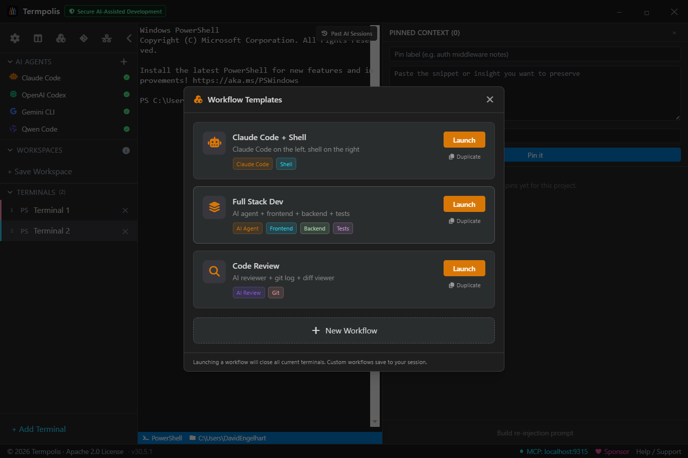
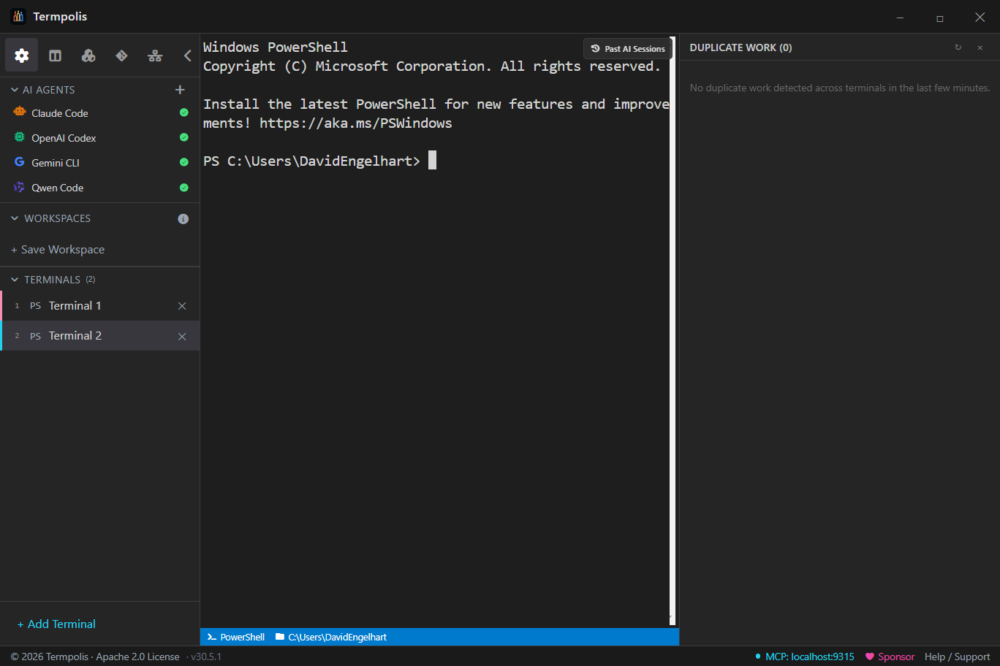
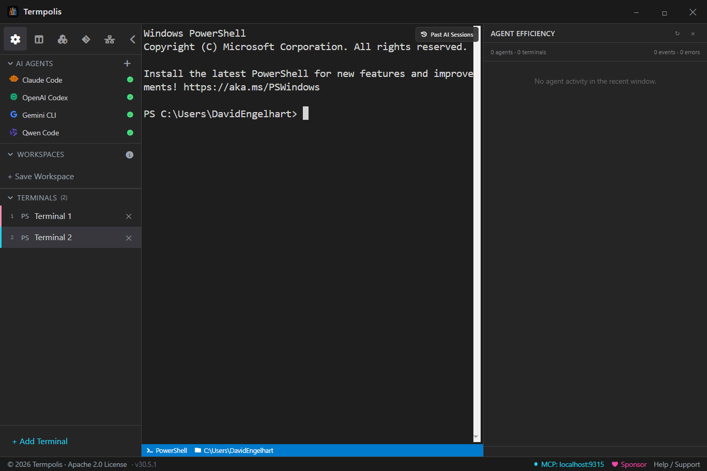
Workflow Orchestrator
Chain agents, commands, and skills into one repeatable run
New in v1.31: an Azure-Logic-Apps-style canvas for automating the work you repeat. Drop in steps, wire them together, hit Run, and watch each one go green on a live timeline — all local, all on your machine. Every workflow saves as portable YAML you can commit alongside your code. New in v1.32: workflows run themselves — on a cron, on a commit, on a push, or when files change.
Four kinds of step
Command runs a shell line on a real terminal — inline or a script file, any shell, with a timeout. Agent launches Claude Code, OpenAI Codex, or Gemini CLI on a prompt and waits for it to finish. Skill calls one of Termpolis’s built-in tools — code search, memory, git. Control branches, loops, waits, or notifies.
Real control flow
Branch to another step, loop earlier steps until a condition holds, wait, or
post a notification. Every step carries a when gate and an
optional “continue even if this step fails,” so a single workflow
can react to what the previous step actually did.
Data flows between steps
Later steps read earlier results — steps.build.exitCode, a
step’s captured output — inside gates, branch conditions, loop
guards, and notify messages. Expressions run through a small, pure, sandboxed
evaluator; never eval.
Watch it run — and stop it
The Run view streams each step’s output live, marks it succeeded, failed, or skipped, and shows how long it took. Cancel mid-run and every in-flight step is torn down cleanly.
Write once, run in any repo
Set a workflow’s availability to Global and it follows you
— it shows in the sidebar in every project and runs against whichever
directory you’re standing in, so ${project.cwd},
${project.name} and ${project.branch} resolve to the
repo you’re actually in. Give it a Category and the sidebar
files it into a collapsible folder. Give it Inputs and Termpolis
asks for them before the run — ${inputs.NAME} reaches every
command, prompt, path, and condition, and a required input keeps the Run button
locked until it’s filled in.
It runs itself
Give a workflow a trigger and stop pressing Run. Schedule
takes a real cron expression (0 2 * * *, or @daily)
in your local time, and catches up a run missed while the app was closed.
Git commit fires within about 15 seconds of a commit landing on the checked-out
branch — it runs after the commit (it is not a git hook and can’t block it) and can lint, test, or hand the diff to an
agent. Git push watches the remote-tracking ref.
File change is a debounced recursive watch you can narrow to
one folder. Triggers survive restarts, and an automatic run takes the exact
same path as pressing Run — including the workspace-trust gate, so an
untrusted folder never fires. A global workflow arms in every project you have
open, and each one keeps its own trigger state, so a commit in one repo only
fires that repo’s run.

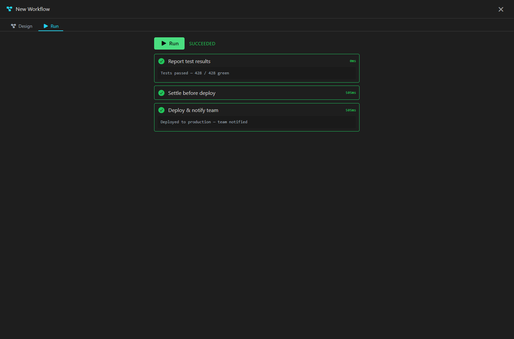
AI-native features
Built from the ground up for AI coding workflows
Termpolis isn't just a terminal that runs AI tools. It's designed around them. Launch agents with one click, orchestrate swarms, track costs, record sessions, search conversations, and let AI agents control your workspace through MCP.
AI agent profiles
One-click launch for Claude Code, Codex, and Gemini CLI. Add custom profiles for any AI tool. Each gets its own terminal with the right shell, color, and startup command.
MCP server
Built-in HTTP/SSE server on localhost:9315 with 40 tools. AI agents create terminals,
run commands, read output, manage your workspace, and tap a shared memory that learns
from every session. Connects to Claude Code and Codex once you say so; agy, which the sidebar’s Gemini CLI profile runs, isn’t connected.
Native code graph
Agents navigate your codebase by structure, not grep. A
local, pre-indexed symbol graph — spanning TypeScript/JavaScript, Python,
Go, Rust, Java, C#, Ruby, and Swift, plus Terraform and
Bicep for infrastructure — answers code_explore (a
symbol’s source, callers, and callees), code_callers /
code_callees, code_impact (the blast radius before you touch
a shared function), code_search, and code_locate (predict
where an issue lives). Parsing is AST-precise via web-tree-sitter (WASM) for the eight languages (Terraform and Bicep use pattern rules),
so it’s still fully native-free and on your machine — no cloud, secrets excluded.
New in v1.23: the graph is keyed per repository — a
second repo no longer clobbers the first, and each repo’s graph is a durable on-disk
store, so a transient non-git directory won’t wipe one you’ve already built. An edit
re-indexes just the changed file (debounced), so the graph stays fresh in seconds.
Context handoff
Past AI Sessions → Continue carries a past Claude Code session into Codex or a fresh Claude Code (its Gemini CLI entry types the old gemini command, not agy).
It hands over the project folder and branch, the original goal, your latest direction and the last assistant turn, pasted in for you to review and send.
Command palette
Ctrl+K opens a natural language command bar. Type "new terminal", "launch claude", "split right". 19 commands, all local pattern matching, no API keys needed.
Prompt templates
Save reusable prompts (Fix Tests, Code Review, Refactor) and insert them into any terminal with Ctrl+Shift+P. Create custom templates for your workflows.
Voice dictation
Talk to your agents instead of typing. Ctrl+Shift+L dictates tap-to-toggle or hold-to-talk; Groq’s cloud Whisper API transcribes it (off by default: switch voice on in Settings and add your Groq API key), called from the main process so the API key never reaches the renderer, and a no-speech energy gate stops silence from turning into hallucinated text. Pick and test your mic in Settings.
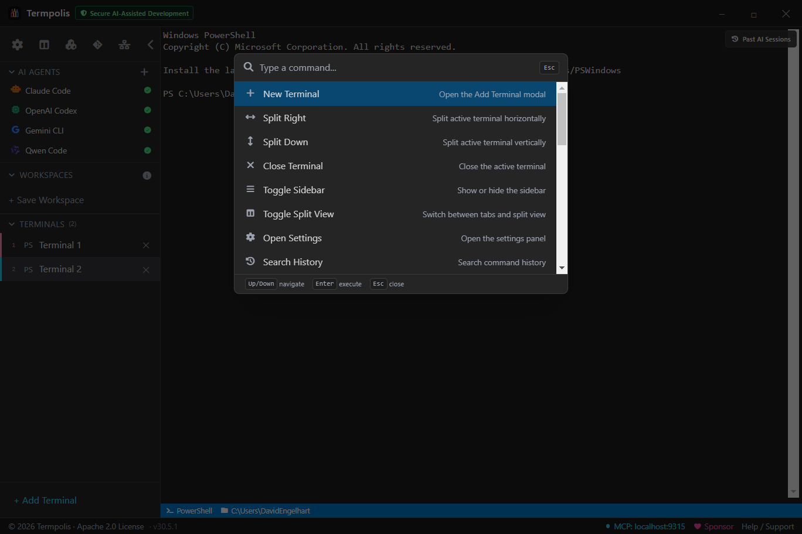

Git & diffs
Your repo state, where the work is happening
An agent changes files faster than you can watch. Termpolis keeps the answer to “what just changed, and have I pushed it?” in the same window as the terminal that changed it — a git panel, a diff reader, and a mark on every terminal that goes amber the moment you have work waiting.
The git panel
Opens from the sidebar and finds the repo itself, from the active terminal’s
working directory — or point it at a folder. Current branch, staged and
unstaged sections with counts, and every file carrying its status letter —
M modified, A added, D deleted,
R renamed, U untracked.
Stage or unstage one file on hover, or all of them at once. Commit, pull, push.
It re-reads status every 3 seconds, so it is never showing you a stale tree.
Click a file, read the diff
Clicking a file opens its unstaged changes as a diff in place (staged-only and untracked files show no diff) — additions green, deletions red, hunk headers blue. No external difftool, no leaving the window, Esc back to the file list.
When an agent prints a diff
A View Diff button appears on the pane when a plain (uncoloured) diff --git header shows up in its recent output; right-click → View as Diff opens the same view any time.
It takes the pane’s last 4 KB of output, strips the ANSI codes, and renders it properly:
split per file on diff --git, real line numbers recovered from each
@@ hunk header, one click to copy. A wall of coloured terminal text
becomes something you can actually review.
The dot that means “you have work waiting”
Every terminal row carries a small git mark — plain shells and AI terminals alike. Grey and still when the tree is clean; amber and pulsing when anything is staged, modified, untracked, conflicted, or committed but not pushed. That last one is the state people actually lose work from, and nothing else in a terminal shows it. Hover for the breakdown: 3 staged, 2 modified, 1 to push.
Behind the remote doesn’t pulse
A deliberate choice. Being behind is someone else’s work arriving, not yours waiting — and on a busy shared repo it would leave the dot pulsing forever, which teaches you to ignore it. It is still in the tooltip. Only your own outstanding work animates.
Real git, every time
Every action is a real git command in a spawned process — no
reimplementation, no bundled libgit. Your hooks run, your config applies, your
credential helper is the one that answers, and you can always drop to the CLI and
see the identical state. Status polling is shared per working directory, so ten terminals
open in one directory is still one git status.
Terminal features
Everything you need in a modern terminal
Split panes
Split any terminal horizontally or vertically with draggable dividers. Nest splits recursively.
7 themes
Dark, Light, Solarized Dark/Light, Monokai, Dracula, Nord. Per-terminal with live preview.
Command autocomplete
VS Code-style dropdown for 20+ tools. Commands, subcommands, flags with descriptions.
Command auto-fix
Mistype a command? Green banner suggests the correction. Enter to run, Esc to ignore.
Configurable keybindings
18 keyboard shortcuts; all but the three reserved copy shortcuts can be re-recorded in Settings.
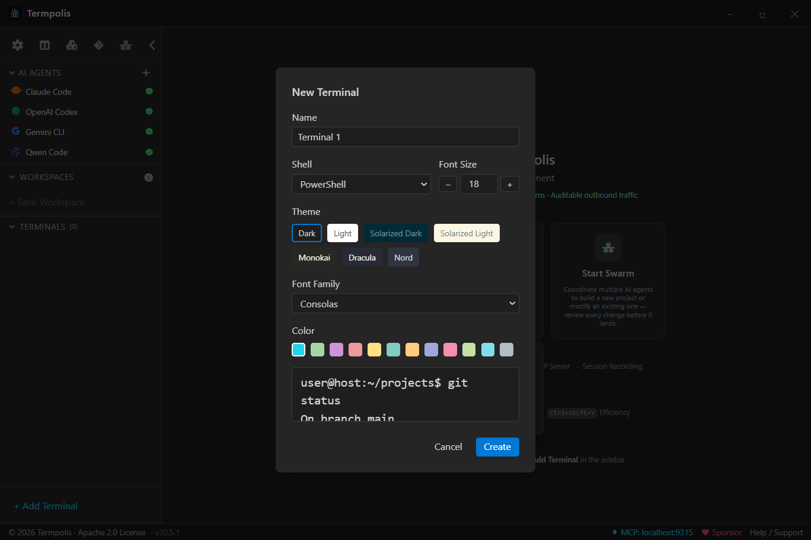
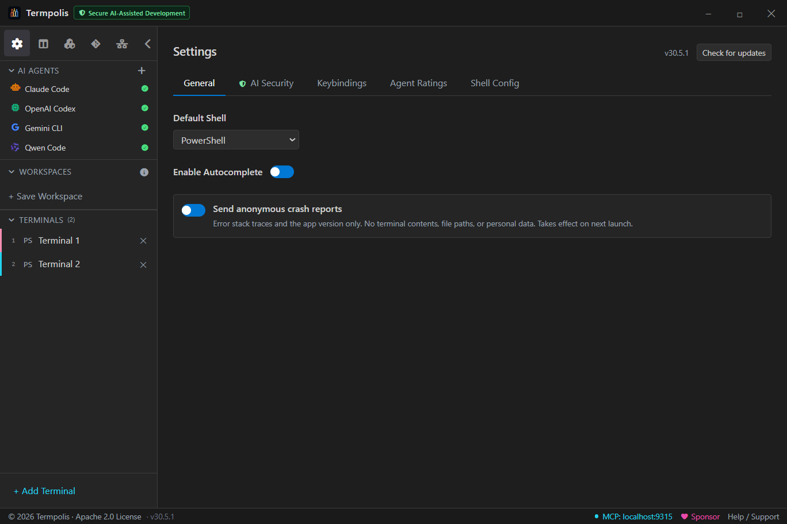
MCP integration
AI agents control your terminal
Termpolis runs an MCP server on localhost:9315 with 40 tools. Claude Code,
Codex and the old Gemini CLI connect to it once you agree (agy, which the sidebar’s Gemini CLI profile runs, isn’t connected). Secured with a 256-bit auth token,
localhost only, no plugins.
40 MCP tools
Terminal management (list, create, run, read, close, write) + file tree + git status + 6 swarm coordination tools + 14 memory/learning tools (write, search, list, related, link, graph, primer, anticipate, pool, self-check, feedback, conflicts, audit, correct) + 6 code-graph tools (explore, callers, callees, impact, search, locate) + run-and-wait, test coverage, retrieve-full, 2 MCP-gateway tools and linked machines.
Connects to your agents — after it asks
Termpolis shows you exactly what it would add to the Claude Code, Codex, and Gemini CLI config files on the first step of the tour, and writes nothing until you finish or skip it — the Connect agents box starts ticked, and clearing it says no. Settings → Agent Integration lists every change, and Disconnect removes all of it.
CLI tool included
termpolis-cli (a Node.js script in the app’s mcp-adapter resources folder; it isn’t added to your PATH) lets you control a running Termpolis from any terminal: list, create, run, read, close. Since v1.36 it also reaches the shared brain — primer, recall and remember — so a CI job, a git hook or a plain script can read and write the same memory the app is built around.
Security hardened
256-bit auth token, localhost only, CORS restricted, no plugins, no telemetry unless you opt in. Atomic file writes.
Workspaces
Save and restore terminal sets
- Save all terminals with names, shells, themes, fonts, colors, and working directories
- Terminals reopen in the same directory they were in when saved
- Settings and saved workspaces persist across restarts; each launch starts with a clean terminal list
- Single-instance lock prevents session corruption
Claude + Tests
Claude Code on the left, test runner on the right.
Dev Environment
Frontend, backend, database, and AI agent in 4 panes.
Multi-Agent
Claude, Codex, and Gemini collaborating on a task.

Shortcuts
Keyboard shortcuts
Performance & security
Enterprise-grade reliability
14,700+ automated tests
14,700+ unit & component tests across 613 files (Vitest — 99.4% line, 98.7% statement, 98.7% function, 97.1% branch coverage) plus a 40+-spec Playwright end-to-end suite that launches the real Electron app, with automated screenshots. Every gate runs on every release.
Output throttling
64KB per-frame rate limit. 10,000-line scrollback cap. Viewport-aware rendering in split view.
Token-saving model broker
Run the cheapest viable model per task: pin a Claude model per profile or switch a running agent's model from the terminal header (Sonnet ≈40% cheaper than Opus, Haiku ≈80%; Codex and Gemini terminals list their own models), and let the swarm conductor downshift the simpler subtasks automatically. Relevance-gated memory recall keeps context windows lean so agents don't burn tokens re-deriving what they already know.
No plugins, by design
Third-party plugins are a security risk. Every feature is built-in, auditable, and ships with the app.
Crash recovery
React ErrorBoundary catches render crashes. Optional Sentry integration. Terminals survive UI errors.
Supported shells
Auto-detects your installed shells
PowerShell 7
Windows, macOS, Linux
Windows PowerShell 5.1
Windows, when PowerShell 7 isn’t installed
Command Prompt
Windows
Git Bash
Windows
Bash
macOS, Linux
Zsh
macOS, Linux
In action
See Termpolis in action
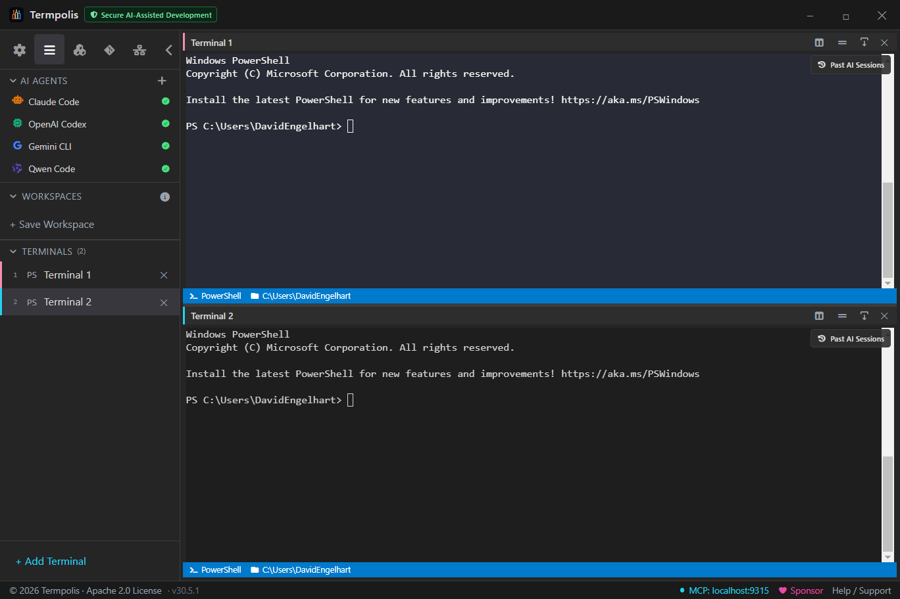
Screenshots
The interface up close
Support the project
Sponsor Termpolis
Termpolis is free, open source, and Apache 2.0 licensed. Building it (including AI token costs for development) takes time and resources. If you find it useful, please consider sponsoring.